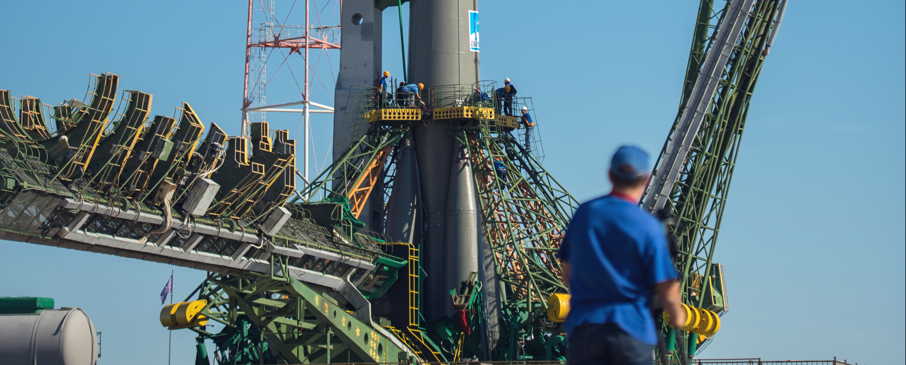

03
Space launch 101

The terminology...
Spaceport
A spaceport or cosmodrome is a site for launching (or receiving) spacecraft, by analogy to the seaport for ships or airport for aircraft. Based in the famous Cape Canaveral, our spaceport is ideally situated to take advantage of the Earth’s rotation for launch.